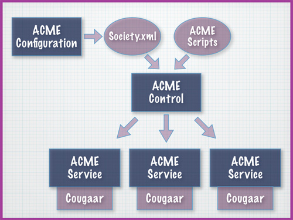

The Automated Configuration Management Environment (ACME) is a distributed systems control and test framework. It is designed to automate the testing and control of distributed environments, specifically Cougaar agent societies, through the use of scripting and messaging technologies.
Distributed systems are inherently difficult to control and test. Agent systems, such as Cougaar, that are reactive to environmental changes are even more difficult to control and test. The ACME framework has been specifically developed to operate in such an environment. The use of the ACME framework to test a distributed infrastructure can reduce testing time dramatically while at the same time increasing testing reliability.
The ACME framework is implemented in the Ruby programming language. Use of a high-level dynamic scripting language allows ACME to maintain the flexibility necessary to manage complex environments. Any project using the Cougaar agent framework should seriously consider ACME as a test and control system.
To download and install ACME see the Download page.
Why should you use ACME?
The ACME framework was created to control Cougaar agent societies and as a result there are many inherent capabilities specifically suited to that task. Several of the core ACME components, including ACME Control and ACME Service, are implemented in a generalized fashion and are suitable for testing other distributed or client-server systems as well.
The ACME framework was also built with scalability in mind. ACME can be installed and used on a single machine in just a few minutes. ACME can also scale up and script the execution of hundreds of distributed nodes. This makes it very attractive for large-scale distributed environments.
To find out more on how ACME helped the UltraLog project read the Case Study.
The three components of ACME
ACME is composed of three components that work together to provide a full configuration and testing framework, they are...
| ACME Configuration Allows the configuration of complex distributed Cougaar Agent societies using a sophisticated rule engine |
ACME Control Controls the execution of distributed Cougaar Agent societies with an powerful, extensible scripting framework. |
ACME Service Executes on each host computer to provide ACME Control the ability to start/stop Cougaar nodes and control the host environment. |
High-level ACME architecture
The following graphic depicts the essential components of the ACME framework working together.
